Machine Learning in Production
IPAs & APIs
Pope
@jppopejonpauluritis.com
ML Overview
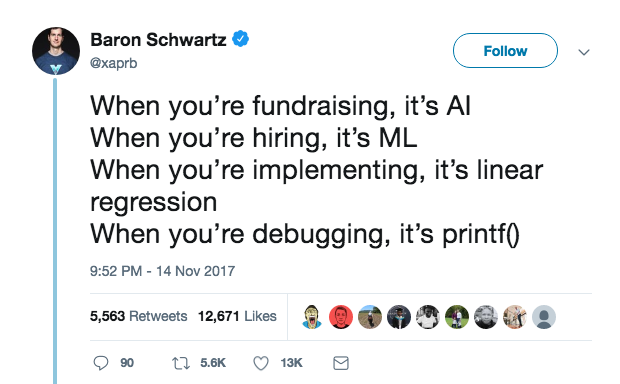Ml Overview
Machine Learning is using stats and data to replace the need for explicit programming.
Why should you care?
Some ML Concepts...
(Not As Hard As You Think)
And it's Already Built...
# import someones awesome work
from sklearn.linear_model import LogisticRegression
# Use it to impress your friends
logisticRegr = LogisticRegression()
logisticRegr.fit(x_train, y_train)
Linear Regression
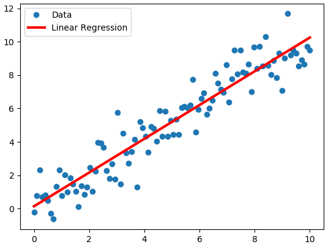Logistic Regression

Classification
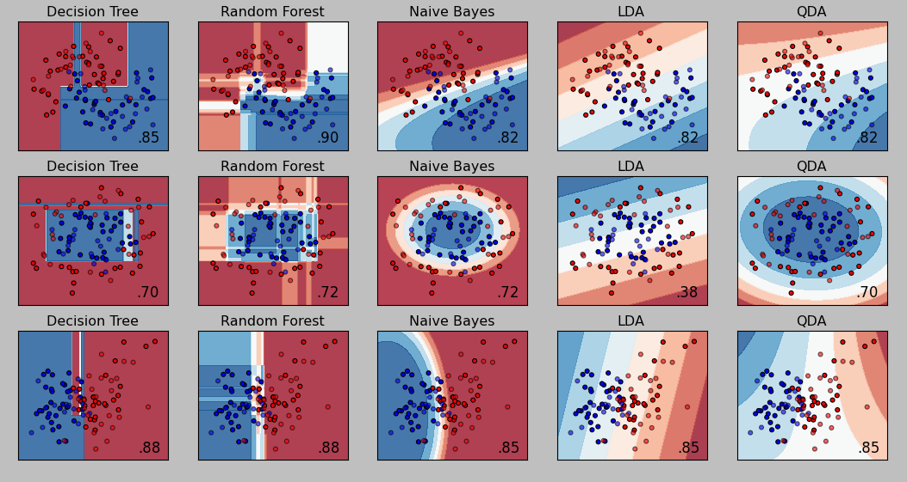Reinforcement Learning
Clustering
Clustering
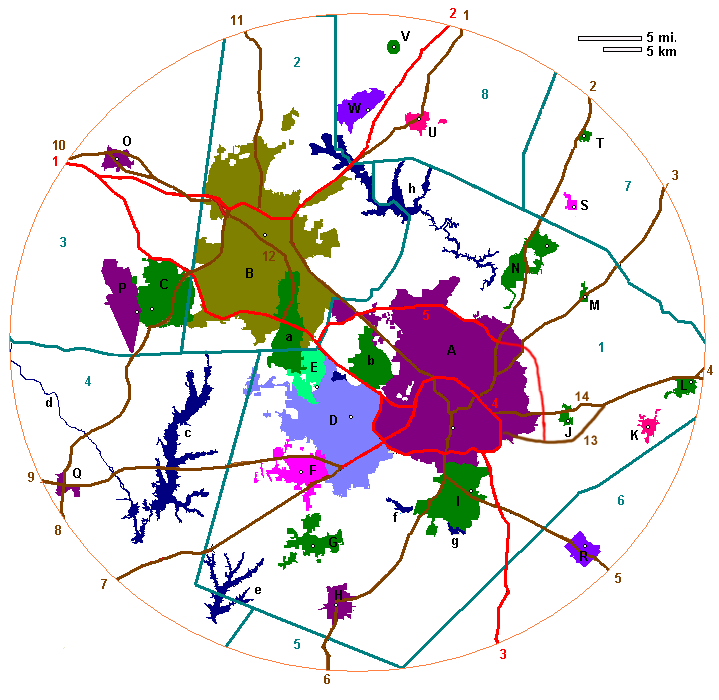Going Deep

Sacha
@SachaRoseUritissacharoserobbins.com
Me
- UCI - Pure Math BS & minor in Stats
- Mathnasium Center Director
- MS in Stats (2017-19)
Irrelevant, but fun facts:
Teach…Sing…Garden, Horticulture, Insects
Line - Two Points
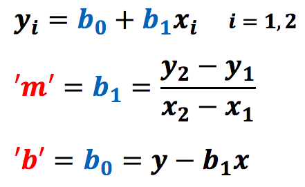Simple Linear Regression
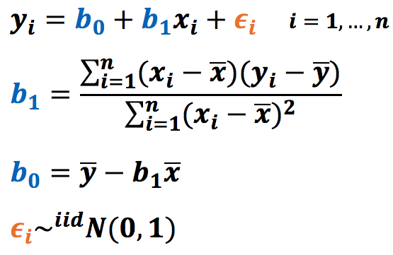
Mutiple Linear Regression
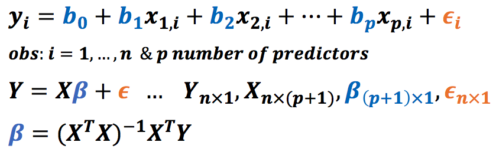 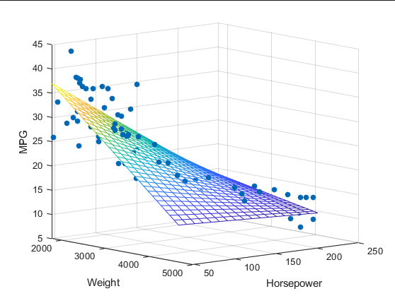General Steps

- Decide Interest(s).
- Get Data.
- Explore & Clean.
- Build a Model.
- Test and Confirm.
- Do Something with It!
Clean it!
User Error
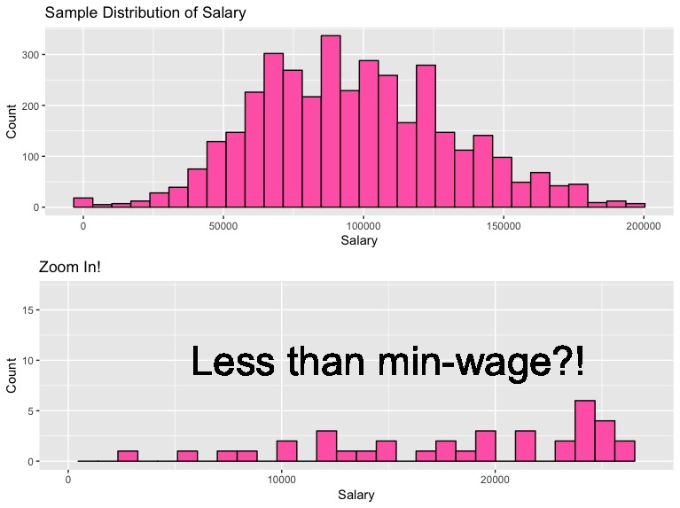Exploratory Data Analysis

Data Subset
- Y variable: Salary
- X variables (continuous):
- YearsProgram
- YearsCodedJob
- X variables (categorical):
- ProgramHobby
- webdev
- mobiledev
- ML
- devOps
- desktop
- X variables (categorical):
- database
- other
- educBA
- educMA
- educPhD
- tabs
- smallComp
- medComp
- largeComp
Model Assessment
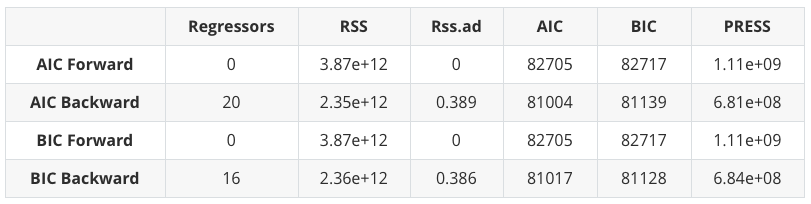Model Assessment
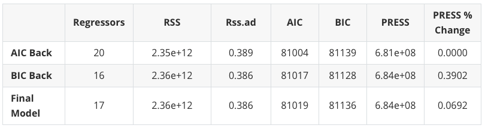Into Production...
Productionizing ML
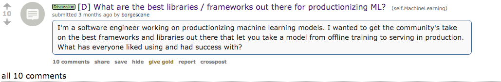Andrew Ng: "State of AI"
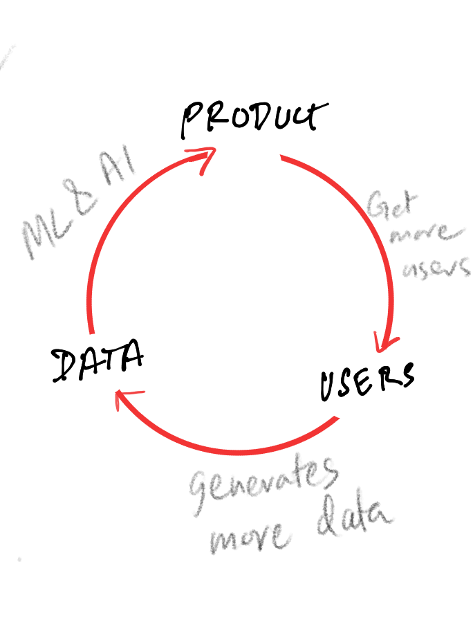- Strategic data acquisition
- Create a interface from data
- Users use interface & generate data
Let's get Real
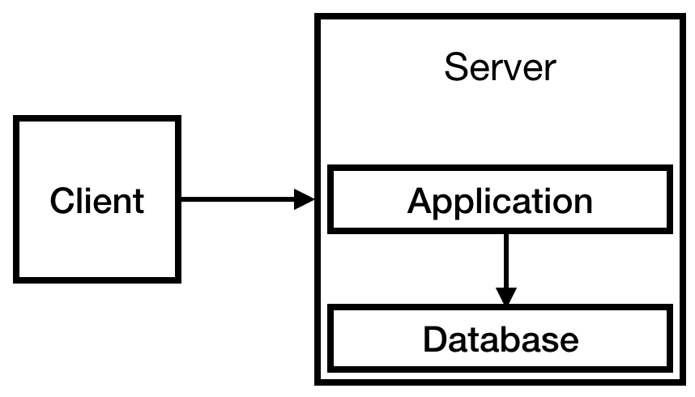- Data Model
- Interface
- User